День стоматолога · журнал «ДентАрт» 2018 №2
Міжнародний день стоматолога 2018
Ганна АнтиповичУкраїнські стоматологи, як і колеги з інших країн, відзначають 9 лютого Міжнародний день стоматолога (ВООЗ і FDI затвердили дату цього професійного свята 1984 року). Але у 2018 році це свято вперше на всеукраїнському рівні відзначили по-особливому. На 9 лютого припала перша річниця заснування Національної спілки стоматологів України, яка разом з виставковою компанією «МЕДВІН» нагороджувала цього дня волонтерів-стоматологів, котрі самовіддано працюють у зоні АТО, повертаючи нашим бійцям стоматологічне здоров'я.
Але для початку нагадаємо історію нашого професійного свята, оскільки публікацій про це небагато.
Свята Аполлонія – покровителька стоматологів
Як відомо, у Стародавньому Римі за імператора Нерона після Великого пожежі 64 року, в якій звинуватили християн, на них упала лавина жорстоких переслідувань і вбивств. Їх катували, змушуючи відректися від віри в Христа, спалювали на вогнищах, кидали на розтерзання звірам.
Серед тих християн, які стійко витримали муки і залишилися вірними своїм переконанням, була і Аполлонія, донька поважного чиновника з Александрії. Про подвиг цієї мучениці розповідав єпископ Александрії Діонісій в одному зі своїх послань єпископу Антиоха Фабію, а пізніше – римський хронікер Евсебій (265-339).
Аполлонію схопили і жорстоко катували, вимагаючи, щоб вона відреклася від своєї віри і повернулася до багатобожжя. Єпископ Діонісій пише, що «юрба схопила цю прекрасну жінку похилого віку, спочатку їй вирвали всі зуби і погрожували спалити її живою». Аполлонія попросила розв'язати її, нібито для того, щоб вона могла стати на коліна і виконати вимоги натовпу, а коли це зробили, жінка кинулася у вогонь...
Коли звістка про подвиг християнської мучениці полетіла між люди, найбільше, звичайно, вразило всіх, що їй вирвали зуби, адже це нестерпний біль. І коли в якогось християнина починався зубний біль, він або вона зверталися до Аполлонії з молитвою.
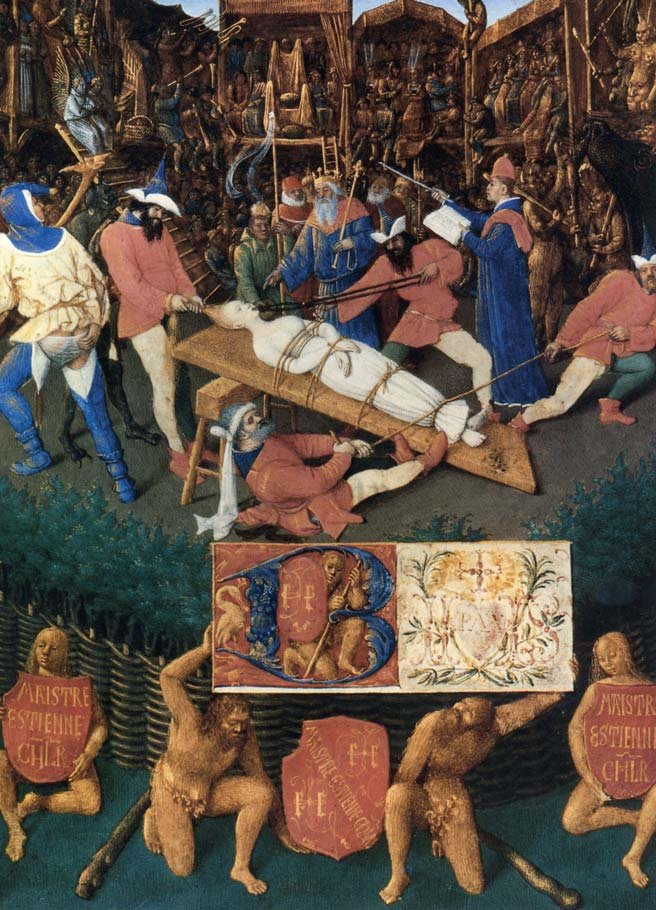
Після канонізації у 300 році у багатьох храмах з'явилися ікони, скульптури Святої Аполлонії, зображення на фресках. Діонісій називав її жінкою похилого віку (хоча в наш час і на початку нової ери поняття про літній вік істотно різняться), але склалася традиція зображати цю святу молодою вродливою панною, яка тримає в руках щипці із затиснутим зубом.
На початку ХVIII століття у Франції відбувалася, можна сказати, стоматологічна революція, коли дантисти вже не тільки видаляли зуби, але й відновлювали їх. Тоді з легкої руки П'єра Фошара Свята Аполлонія стала символом професійного цеху тих, хто лікує зуби, і як бачимо сьогодні – символом на всі часи, не обмеженим рамками однієї конфесії. День Святої Аполлонії припадає на 9 лютого за новим стилем, тому і стала ця дата Міжнародним днем стоматолога.
Нагадаємо, що поділ християнства на дві гілки – західну і східну, католицизм і православ'я – відбувся у 1054 році, а Свята Аполлонія була канонізована за сім з половиною століть до цього. При зубному болю моляться ще й святому Антипі, але покровителем лікарів-стоматологів він не вважається.
Муки і стійкість Аполлонії надихали як багатьох відомих художників, так і народних малярів. Ярина Гриновець, яка досліджувала цю тему, пише, що зображення Святої Аполлонії можна умовно поділити на кілька тематичних груп. Перша – це поширені в Середньовіччі ікони, що зображають муки Аполлонії.
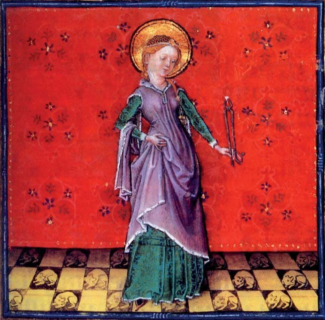
Друга група зображень – ті, де свята постає зі своїм атрибутом – щипцями із затиснутим у них зубом. Такі фрески Бернандо Луїні у монастирі Маджіоре в Мілані (ХV століття) і Джованні ді П'єтро в соборі Сан-Джакомо в Сполето (1526 рік), гравюра Марка Антоніо Раймонді (зберігається у гравюрному кабінеті в Берліні), «Свята Аполлонія» Франческо де Сурбарана (1631, іспанська школа, зберігається в Луврі, Париж).
Третя група – це зображення Аполлонії з іншими святими, наприклад, «Мадонна з дитям, ангелами і святими» П'єтро Перуджіно (1446-1524), що зберігається в Національній пінакотеці Болоньї.
Окрема група – пластичні зображення Святої Аполлонії: дерев'яна скульптура, олтарні композиції та ін.
Не встояли перед драматичною чарівливістю образу Святої Аполлонії і художники нового часу. Серед них – навіть батько поп-арту, всесвітньо відомий американський художник українського походження, що став легендою ще за життя, Енді Воргол (Андрій Варгола, 1928-1987).
А в музеї стоматології Львівського національного медичного університету імені Данила Галицького можна побачити картину, що зображає Святу Аполлонію, яку стоматологи з Рівного подарували колегам з нагоди 50-річчя стоматологічного факультету.
Є ще один тип зображень Аполлонії. Муки святої і її вірність своїм переконанням стали темою театралізованих сцен, які часто розігрували у дворах готелів, а глядачі споглядали дійство з балконів і вікон. До нашого часу дійшло зображення такого театралізованого дійства, яке відображає муки Аполлонії, роботи Жана Фуке (бл. 1420 – бл. 1481) – одного з найвідоміших художників ХV століття, який творив на рубежі пізньоготичної епохи і раннього Ренесансу. Жану Фуке, портретистові і мініатюристові, придворному художникові французького короля Людовика ХІ, меценат, скарбник Еттьєн Шевальє замовив Часослов, де вміщено щоденні молитви і кожна сторінка прикрашена мініатюрами. До широких кіл стоматологів ця ілюстрація дійшла завдяки Мелвінові Е. Рінгу, який видав «Ілюстровану історію стоматології».
Молитва до Святої Аполлонії, помічна при зубному болю, згадується, до речі, і в «Дон Кіхоті» Сервантеса. Коли Дон Кіхот збирався у свій третій похід, ключниця, те завваживши, побігла до бакалавра Карраска, сподіваючись, що той приятель її пана «потрафить одраяти його од того нерозважного заміру». Але бакалавр не збирався того робити, тож між ним і ключницею відбувся такий діалог:
– То мовите, пані господине, що нічого такого не скоїлось, лише боїтеся, що пан Дон Кіхот ізнов своє замишляє?
– А так, – потвердила клюшниця.
– Тоді не журіться, – сказав бакаляр, – а йдіть собі любенько додому та зготуйте мені чогось гарячого попоїсти, а по дорозі прокажіть молитву Святій Аполлонії, якщо знаєте. За малу часину і я до вас прийду, побачите, яка буде чудасія.
– Ой лишко моє, – забідкалася знов клюшниця, – святій Аполлонії, кажете? Се ж якби мій пан на зуби недугував, а він же на голову.
– Я знаю, що кажу, пані господине, – перебив її Карраско. – Ідіть собі й не зривайтеся зо мною диспутувати, бо я своє бакалярство в Саламанці здобув, мене ніхто не перебакалярить. (Переклад Миколи Лукаша).
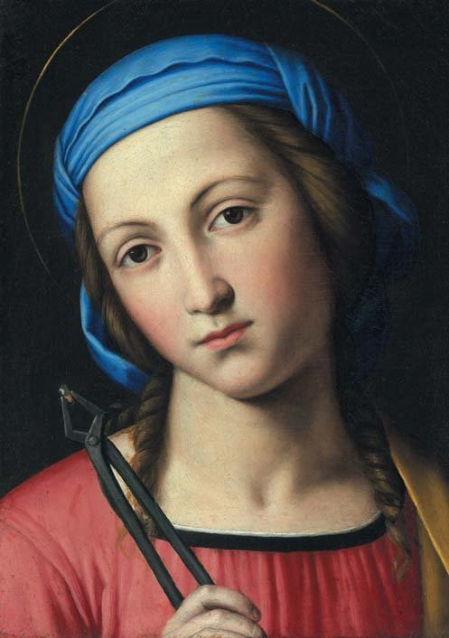
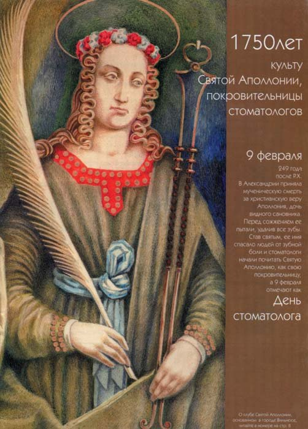
Молитва Святій Аполлонії
О славна Аполлоніє, свята покровителько стоматологів і порятунок для всіх тих, хто страждає від хвороб зубів, я присвячую себе тобі і благаю зарахувати мене до тих, хто перебуває під твоїм захистом. Допомагай мені у щоденній праці своїм заступництвом перед Богом і проси Його дарувати мені щасливу смерть. Молю, щоб моє серце палало такою ж любов'ю до Ісуса і Марії, як і твоє, в ім'я Христа, Господа нашого. Амінь.
Боже, захисти мене від спокуси і дай мені сили, як Ти дав її нашій покровительці Аполлонії, в ім'я Христа, Господа нашого. Амінь.
На початку 1998 року журнал «ДентАрт» №1 опублікував главу з книги Мелвіна Е. Рінга, присвячену Святій Аполлонії, а на порозі нового 1999 року повідомив читачам, що культу Святої Аполлонії, день пам'яті якої 9 лютого став Міжнародним днем стоматолога, виповнюється 1750 років. У 2019 році йому виповниться вже 1770 літ...
Відзначили подвижницьку працю волонтерів-стомАТОлогів
80-а виставка «МЕДВІН: ЕкспоСтомат», яка відбувалася 8-10 лютого 2018 року у виставковому центрі КиївЕкспоПлаза, була особливою. Адже це була можливість не лише познайомитися з новинками стоматології, а й відзначити у колі колег Міжнародний день стоматолога і першу річницю заснування ГО «Національна спілка стоматологів України» (НССУ), яка сьогодні об'єднує 13 профільних стоматологічних асоціацій і 3 волонтерські об'єднання.
НССУ на чолі з президентом Мироном Угрином і виставкова компанія «МЕДВІН» (генеральний директор Едвін Задорожний) були ініціаторами нагородження волонтерів-стоматологів АТО, об'єднаних у неполітичну спільноту «ТриЗуб Дентал», шевронами із зображенням ордена «Народний Герой України».
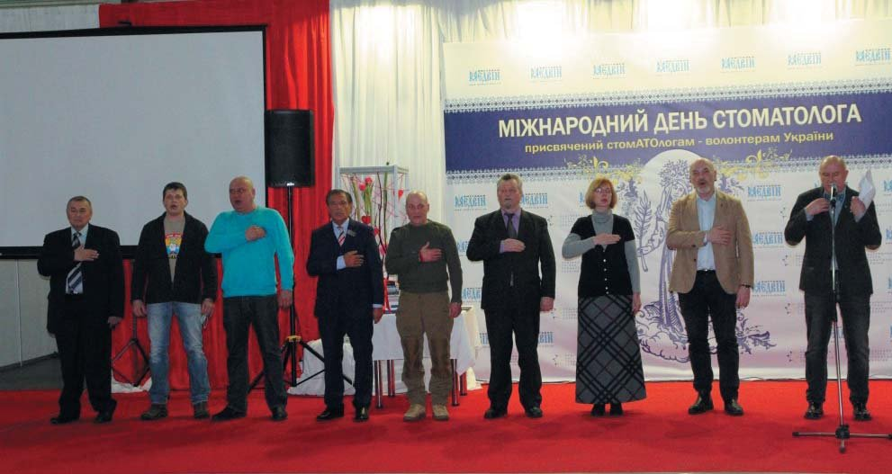
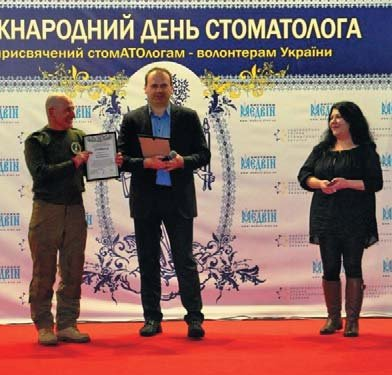
В урочистій, хвилюючій атмосфері, віддаючи належне подвижницькій, самовідданій праці стоматологів у складних умовах АТО, волонтерів привітали заступник міністра з питань тимчасово окупованих територій і внутрішньо переміщених осіб України Георгій Тука, радник Міноборони Юрій Бутусов, народний депутат Оксана Корчинська, волонтер Ірина Довгань, президент Національної медичної академії України Віталій Цимбалюк, президент НССУ Мирон Угрин, генеральний директор виставкової компанії «МЕДВІН» Едвін Задорожний та інші.
Також Національна спілка стоматологів України організувала конференцію для волонтерів-стоматологів з питань кваліфікованої допомоги пораненим «Кращі для кращих», в якій взяли участь провідні фахівці – Мирон Угрин, Орест Штука, Артем Дубнов, Сергій Радлінський, Максим Білоград, Юрій Гундяк, Ігор Казьо, Валерій Земка, Олексій Красножон, Адріана Бариляк, Христина Рижук. Програма конференції викликала великий інтерес, її відвідали понад 150 волонтерів-стоматологів.
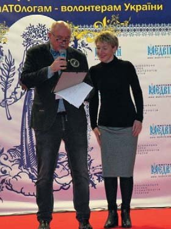
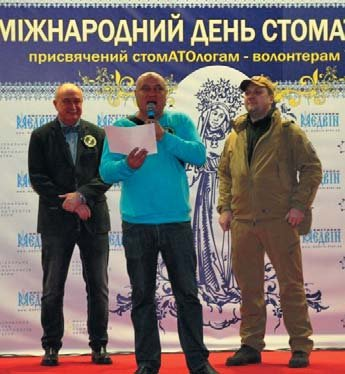
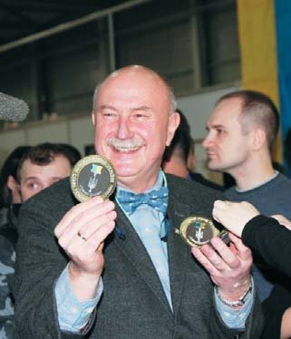
Нагороджуються Ігор Ященко, координатор громадського об'єднання «ТриЗуб Дентал», Марта Дацко, координатор благодійного фонду «Санація», Володимир Стефанів, координатор ГО «ТриЗуб Дентал-2».
А ще присутні могли отримати естетичне задоволення і відволіктися від суворих буднів завдяки виступам композитора-пісняра, поета і співака Анатолія Сердюка і учасників студії ірландського танцю FireDance.
Уперше святкування Міжнародного дня стоматолога, проведене Національною спілкою стоматологів України, відбувалося на такому рівні і в неформальній атмосфері. Також НССУ звернулася до представників державних органів з пропозицією внести Міжнародний день стоматолога (9 лютого) до переліку державних свят України.
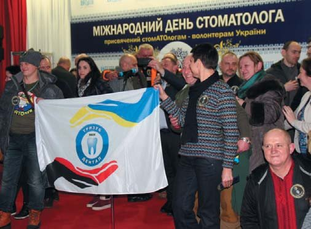
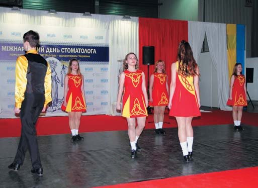
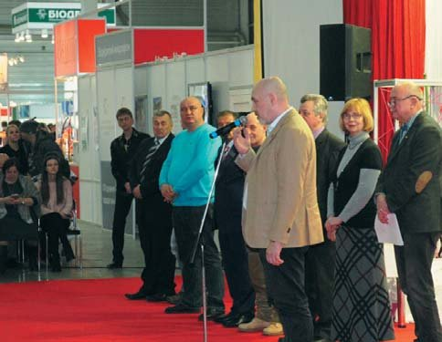
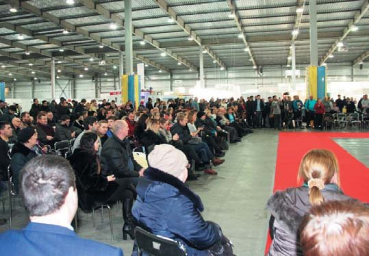
У День Святої Аполлонії
У світі, де ще повно дилетантів,
Що гасять промінці краси і честі,
Нелегко виквітнути справжньому таланту
І усмішку усім в дарунок нести.
Та духа не вгашаймо! Хоч горять стигмати –
Сліди нових розп'ять в суворі дні,
Хай Аполлонія пригорне вас, як мати,
І розжене всі хмари навісні…
Ганна Антипович